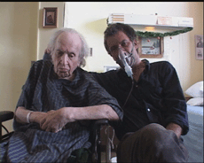

|
PETIT POW! POW! NOËL (Yule Croak)
Robert Morin | Canada 2005 | 91 min.
Format: BetaSP
Material: DV
Original language: French
Script: Robert Morin
Camera: Robert Morin
Editing: Sophie Leblond, Martin Crépeau
Sound: Louis Collin, Stéphane Bergeron
With André Morin, Robert Morin
Production: Coop Video Montréal
Distribution: Fun Films
Prix de la Main, Festival du nouveau cinéma, Montréal 2005
German Premiere
Christmas Eve. With a camera in one hand and a syringe in the other, a man enters a long-term care centre with the intent to put his father on trial and eventually kill him. Complications: the old man is autistic; the attending staff is bothersome. Countdown: the closed circuit proceedings last 24 hours. Drift: the avenger finally condemns his whole family, himself included. Finish line: the encounter with death ends over a box of chocolate cookies.
Robert Morin, founding member of the Coop Vidéo de Montréal in 1977. Morin has made about thirty films and videos of varying lengths, of which most have won awards and nominations internationally. He has been the focus of countless homages and retrospectives (among others at the Cinémathèque Québécoise, the Cinéma Parellèle, in Québec City, Ottawa, Toronto, Montbéliard, Bourges, Brussels and Marseille) and has received many distinctions over the years.
Films (selection): Même mort il faut s'organiser 1977 | The Mysterious Paul 1983 | Scale-Model Sadness 1987 | The Reception 1989 | Requiem pour un beau sans-coeur 1992 | Yes Sir! Madame... 1994 | Whoever Dies, Dies in Pain 1997 | Petit Pow! Pow! Noël 2005 | May God Bless America 2005
back
|